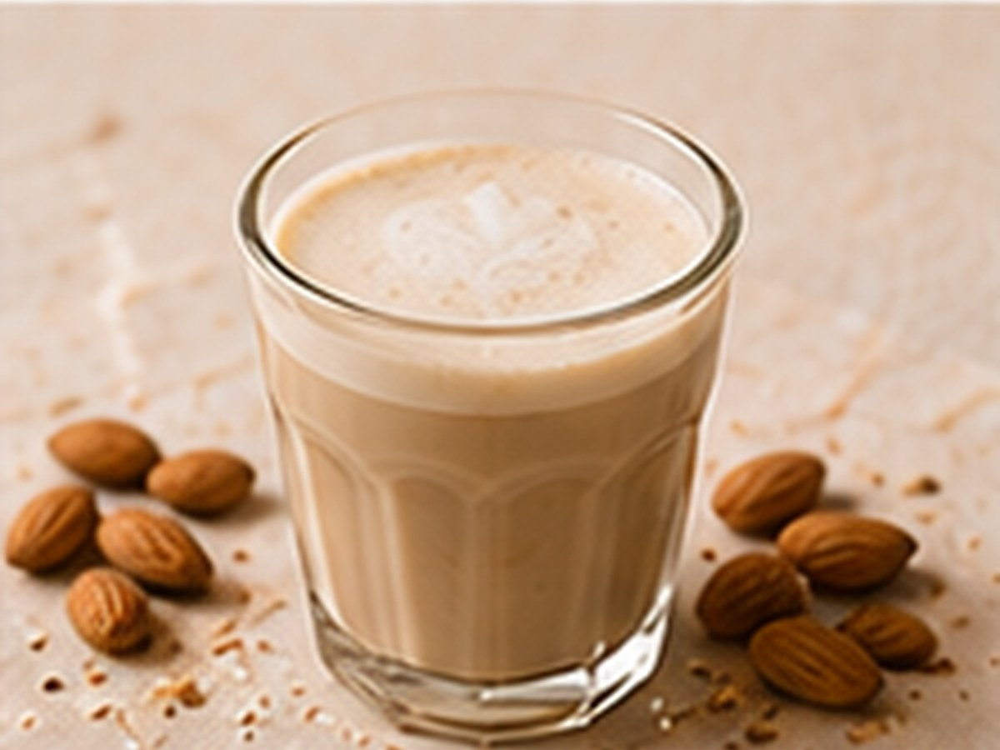

✨ KI-generiertes Bild MilchalternativenMilchalternativen
Latte mit Mandelmilch
Pflanzlich statt Kuhmilch.
⏱4 Min.
📶Einfach
☕1 Portion
🫘Zutaten
- Espresso1 Shot
- Mandelmilch180 ml
📋Zubereitung
- 1Mandelmilch cremig aufschäumen.
- 2Espresso zubereiten.
- 3Mandelmilch über den Espresso gießen.
💡
Kaffee für dieses Rezept entdeckenLeNoKo Shop
→
Kaffee-Tipp
unseren Peru trifft Indien harmoniert besonders gut mit Mandelmilch.